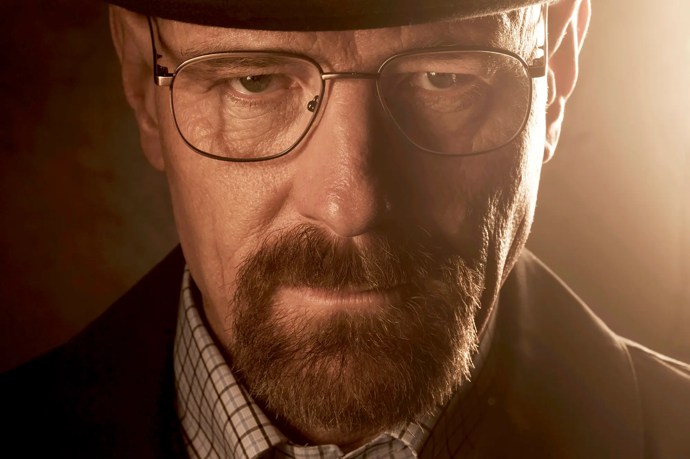

Biografía de Walter White

Walter White es el protagonista principal de Breaking Bad.
Era un profesor de química de secundaria en Albuquerque,
Nuevo México. Tras ser diagnosticado con cáncer de pulmón,
decide fabricar metanfetamina para asegurar el futuro de su familia.
Con el paso del tiempo adopta el nombre de Heisenberg y se convierte
en uno de los narcotraficantes más temidos.
Walter Hartwell White Sr., también conocido por su alias Heisenberg, es el antihéroe ficticio convertido
en el villano protagonista de la serie de televisión de drama criminal estadounidense Breaking Bad,
interpretado por Bryan Cranston.
Datos importantes
- Nombre completo: Walter Hartwell White
- Alias: Heisenberg
- Profesión: Profesor de química y fabricante de metanfetamina
- Familia: Skyler White, Walter Jr. y Holly
- Compañero principal: Jesse Pinkman
Frases icónicas
- Yo soy el peligro.
- Lo hice por mí. Me gustaba.
- No estoy en peligro, Skyler. Yo soy el peligro.
- Say my name.
Importancia en la serie
Walter White representa la transformación de una persona común en alguien consumido por el poder y la ambición.
Muerte en la serie
Walter White muere solo, herido por una bala, en el laboratorio de metanfetamina, con una sonrisa de
satisfacción mientras yace junto a su creación, la metanfetamina azul.
Walter White, también conocido como Heisenberg, muere al final de la serie en el episodio titulado "Felina".
Tras un enfrentamiento con Jack Welker y su banda, Walter logra liberar a Jesse Pinkman, asesinar a Jack y
envenenar a Lydia, cerrando los cabos sueltos de su vida criminal y vengando a sus víctimas indirectas
Su muerte ocurre en el laboratorio de metanfetamina, herido por una bala durante el tiroteo, y muere
sonriendo, no por felicidad, sino por la satisfacción de haber completado su plan y estar junto a la
sustancia que lo definió como Heisenberg